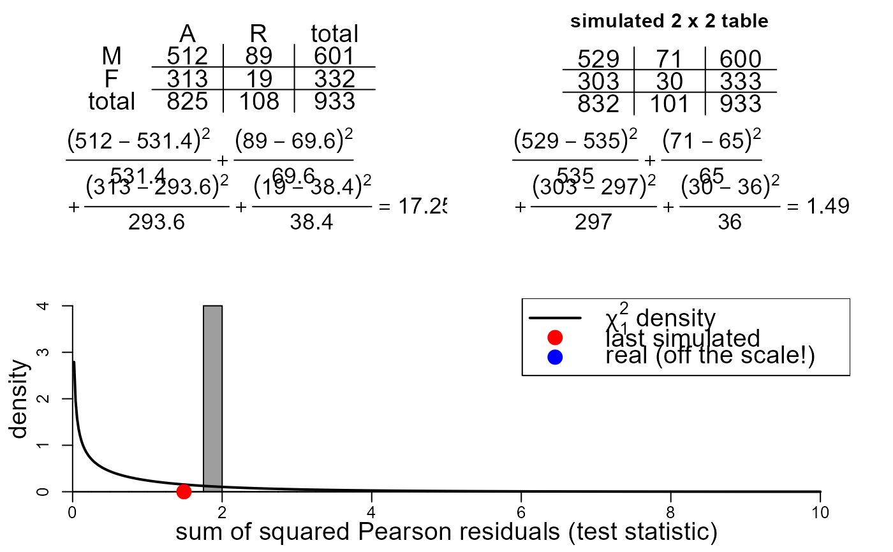
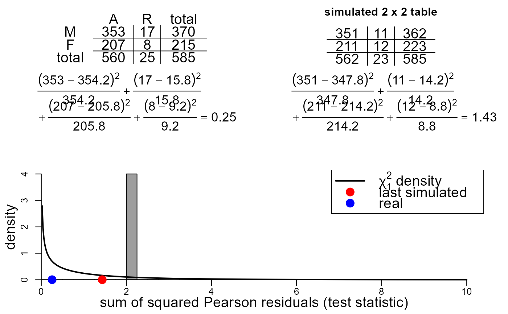

R/two_by_two_contingency_table_test_movie.R
two_by_two_movie.RdA movie to study the distribution of the Pearson chi-squared test statistic used to test for lack of association in a 2 by 2 contingency table.
two_by_two_movie(data, bin_width = 0.25, pos = 1, envir = as.environment(pos))A numeric 2 by 2 matrix, giving the observed frequencies of a 2 by 2 contingency table.
A numeric scalar. The width of the bins in the histogram of the test statistics plotted on the bottom on the movie.
A numeric integer. Used in calls to assign
to make information available across successive frames of a movie.
By default, uses the current environment.
An alternative way (to pos) of specifying the
environment. See environment.
Nothing is returned, only the animation is produced.
The movie is split into three sections.
In the top left is a table displaying the contingency table based on
the frequencies in data, with row totals, column totals and the
grand total added. If data has row and column names then
only the first letters of these are added to the table.
In the top right is a similar table containing frequencies based on
simulated data. The simulated data has the same grand total as
data. The data are simulated under the assumption that the
value of the variable in the row of the table is not associated with
the value of the variable in the column of the table.
See Section 8.1.2 of the STAT0002 notes for details.
Under each of these tables the calculation of the Pearson chi-squared test statistic is given. Every time a new simulated dataset is produced the value of the test statistic is added to a histogram containing all the test statistics of simulated data produced. The most recent simulated test statistic is indicated in this plot with a red circle. The test statistic produced from the real data is indicated in this plot with a blue circle. The p.d.f. of a chi-squared random variable with one degree of freedom is superimposed on the plot. If the expected frequencies based on the real data are sufficiently large then the distribution of the test statistic under the null hypothesis of no association has approximately this distribution.
Three radio buttons enable the user to choose whether to simulate 1, 100 or 1000 datasets.
stat0002movies: general information about the movies.
# Ignore department
sex_outcome <- apply(UCBAdmissions, 2:1, FUN = sum)
colnames(sex_outcome) <- c("A", "R")
rownames(sex_outcome) <- c("M", "F")
two_by_two_movie(data = sex_outcome)
# Conditon on department 1
sex_outcome_1 <- UCBAdmissions[, , 1]
colnames(sex_outcome_1) <- c("A", "R")
rownames(sex_outcome_1) <- c("M", "F")
two_by_two_movie(data = sex_outcome_1)

# Conditon on department 2
sex_outcome_2 <- UCBAdmissions[, , 2]
colnames(sex_outcome_2) <- c("A", "R")
rownames(sex_outcome_2) <- c("M", "F")
two_by_two_movie(data = sex_outcome_2)
